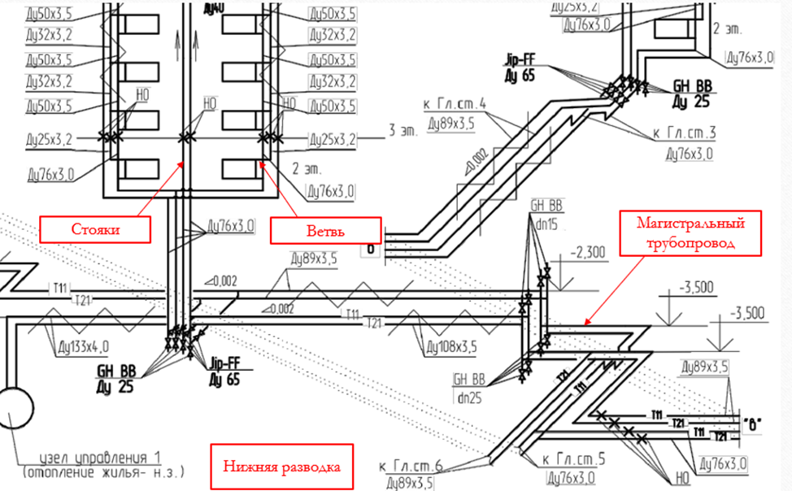
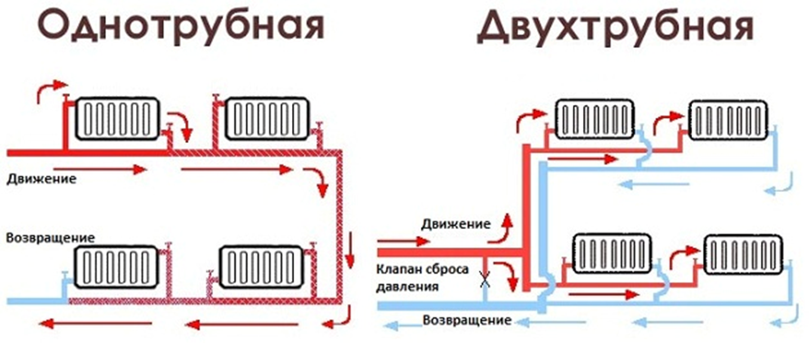
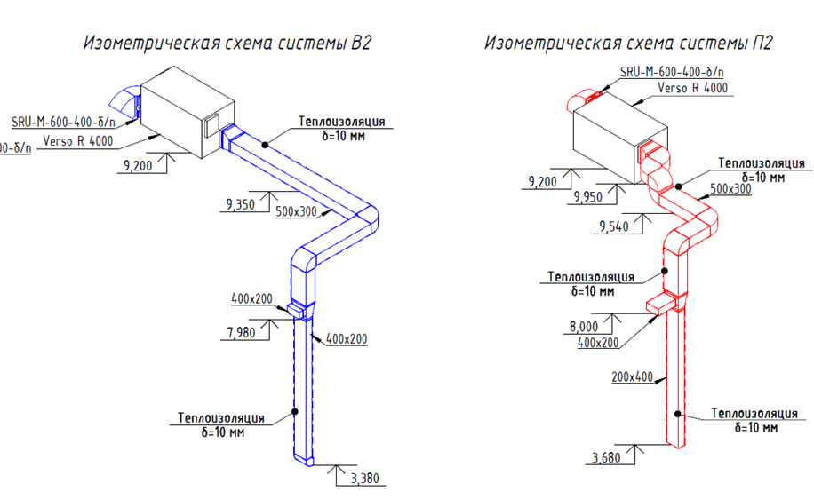

Общие сведения о разделе ОВ

Раздел ОВ
Раздел ОВ – раздел рабочей документации, который включает в себя инженерные решения по проектированию систем отопления, вентиляции и кондиционирования. Также, данный раздел может включать в себя такие системы, как теплоснабжение и холодоснабжение.
Раздел ОВ включает в себя следующие основные элементы:
- пояснительная записка или раздел «Общие данные» - описательная часть, в которой содержится информация о проектных решениях, применяемых нормативных документах, характеристиках оборудования, расчетные параметры климата, а также некоторые требования по монтажу;
- планы этажей со схемами прокладки воздуховодов, трубопроводов и оборудования;
- аксонометрические схемы инженерных систем – пространственные схемы, показывающие расположение систем в трехмерном виде для наглядного понимания;
- спецификации оборудования и материалов – полный перечень элементов систем с указанием технических характеристик, наименований и количества.
Нормативные документы:
- СП 60.13330.2020 «Отопление, вентиляция и кондиционирование воздуха»
- СП 73.13330.2016 «Внутренние санитарно-технические системы зданий»
- СП 347.1325800.2017 «Внутренние системы отопления, горячего и холодного водоснабжения»
Система отопления
Система отопления – инженерная сеть, предназначенная для поддержания комфортной температуры в помещениях в холодное время года.
| Источник тепла – основной элемент, отвечающий за нагрев теплоносителя. Может быть котел, тепловой пункт и пр. |
| Теплоноситель – среда, через которую передается тепло. В качестве теплоносителя могут быть: вода, пар, воздух. Также системы отопления могут быть электрическими. |
| Магистральный трубопровод – трубы, которые подают теплоноситель к стоякам (подающие магистрали) или отводят охлажденный теплоноситель от стояков к теплообменникам (обратные магистрали). |
| Стояк – вертикальный трубопровод, который соединяет магистрали с горизонтальными ветвями. |
| Ветвь – трубопровод, который соединяет отопительные приборы со стояками или магистралями. |
| Отопительные приборы – радиаторы, гладкие трубы, регистры, конвекторы и др. |
| Запорно-регулирующая арматура – позволяют регулировать подачу тепла. |

Схемы систем отопления
Разводка распределительных магистралей по зданию может быть горизонтальной или вертикальной.
Горизонтальная разводка магистральных трубопроводов в здании конструктивно может быть:
- Верхней, если подающая и обратная распределительные магистрали прокладываются выше отопительных приборов здания;
- Нижней, когда оба трубопровода расположены ниже отопительных приборов и прокладываются в подвале здания, а при его отсутствии — в цокольном или первом этаже;
- Смешанной, когда один из распределительных трубопроводов прокладывается по крыше здания (выше отопительных приборов), а другой — по подвалу (ниже отопительных приборов).
Присоединение подводок к ветви системы отопления бывает:
- однотрубное с последовательным соединением отопительных приборов;
- двухтрубное с параллельным присоединением отопительных приборов. В двухтрубной системе горячая вода и охлажденная вода соответственно подводятся к нагревательному прибору и отводятся от него по отдельным трубам.

Система вентиляции
Система вентиляции – это система, обеспечивающая воздухообмен в помещениях.
Виды систем вентиляции
По способу воздухообмена:
естественная – происходит за счет разницы температур и давления внутри и снаружи здания. Пример – проветривание помещения через окна или вытяжные каналы.
механическая – работает с использованием вентиляторов.
По функциональному назначению:
- Приточные (П) – обеспечивает подачу воздуха извне. Часто используются вместе с фильтрацией, нагревом или охлаждением воздуха.
- Вытяжные (В) – удаляет загрязненный воздух из помещения.
- Приточно-вытяжные (ПВ) – объединяет функции подачи и удаления воздуха. Может оснащаться рекуператором для энергоэффективного использования тепла вытяжного воздуха.
- Системы дымоудаления (ДУ, ВД) – удаление дыма и токсичных продуктов горения из помещений или эвакуационных путей, предотвращает распространение дыма по зданию,
- Системы подпора воздуха (ПД) – создает избыточное давление в зонах, не предназначенных для задымления (лестничные клетки, шахты лифтов, эвакуационные коридоры).
По зоне обслуживания:
- местная – обеспечивает воздухообмен только в определенных участках помещения (например, вытяжки над плитами или сварными станками).
- общеобменная – охватывает все помещение или здание.
Встроенный материал · штатный PDF-экспорт
Открыть сохранённый PDF · Исходная страница
Текст и изображения исходной страницы
Состав системы вентиляции

2. Воздуховоды
4. Фильтры
5. Шумоглушители
7. Теплоизоляция, огнезащита воздуховодов
Состав системы вентиляции
2. Воздуховоды
4. Фильтры
5. Шумоглушители
7. Теплоизоляция, огнезащита воздуховодов
Примеры аксонометрических схем систем вентиляции:

Система кондиционирования
Система кондиционирования – это система, предназначенная для поддержания в помещении оптимальных параметров микроклимата: температуры, влажности и качества воздуха.
Виды систем кондиционирования
Смотрите в памятке ниже перечень видов систем кондиционирования.
Внутренний блок – находится внутри помещения и отвечает за обработку воздуха. Основные элементы: испаритель (охлаждает воздух), фильтры (очищают воздух), вентилятор (обеспечивает циркуляцию воздуха). |
Наружный блок – устанавливается снаружи здания. Основные элементы: компрессор (сжимает хладагент, обеспечивая его циркуляцию), конденсатор (отводит тепло наружу), вентилятор (охлаждает конденсатор). |
Хладагент – вещество (например, фреон), которое циркулирует в системе, обеспечивая теплообмен. |
Система управления – включает термостаты, датчики и контроллеры для регулировки параметров. |
Трубопроводы (как правило, медные). |
{kind=link}
{kind=link}
{kind=link}